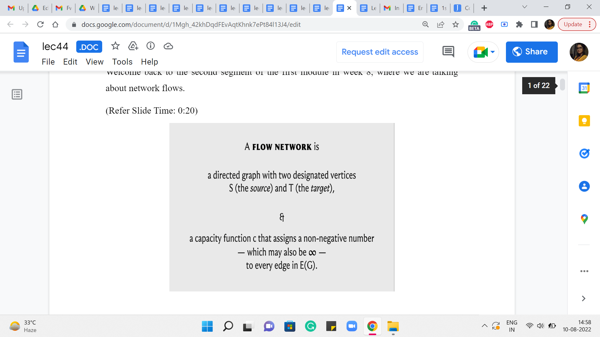
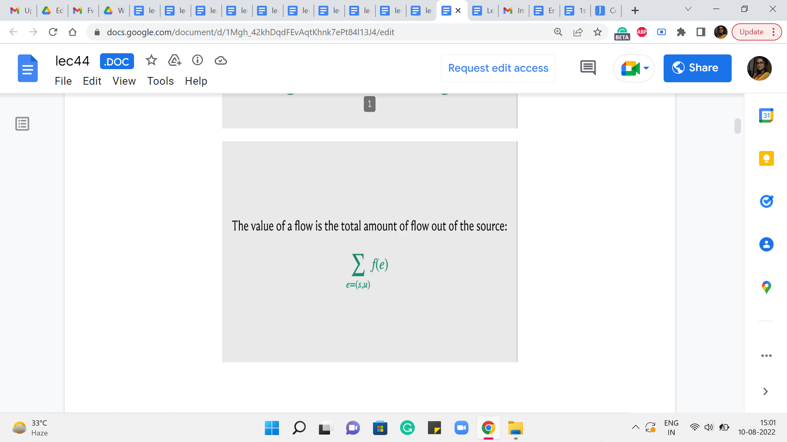
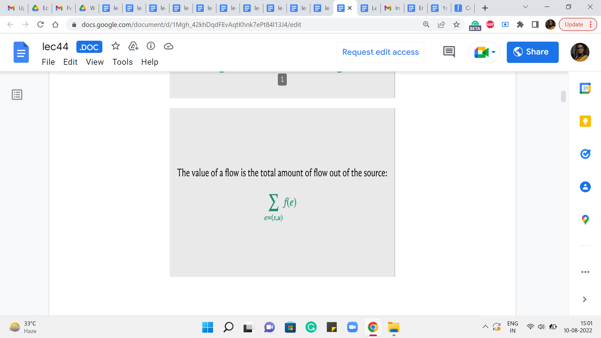
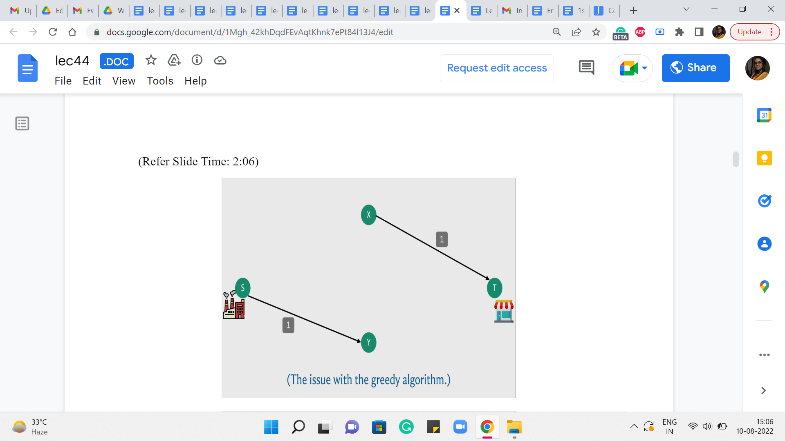
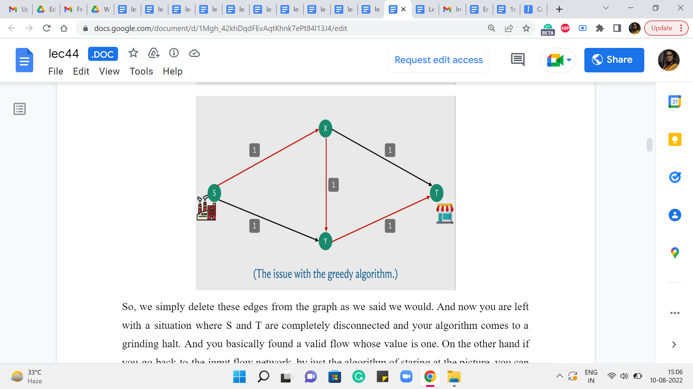
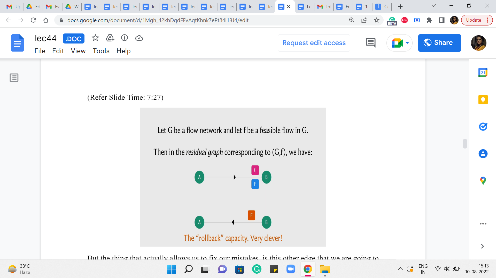
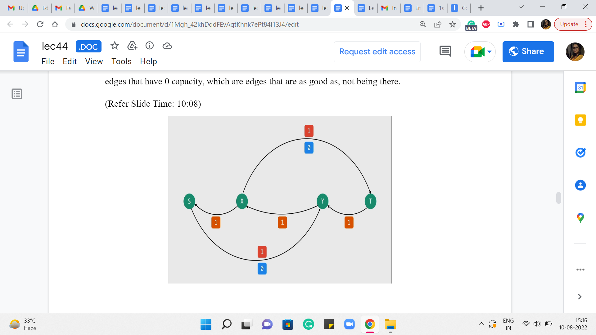
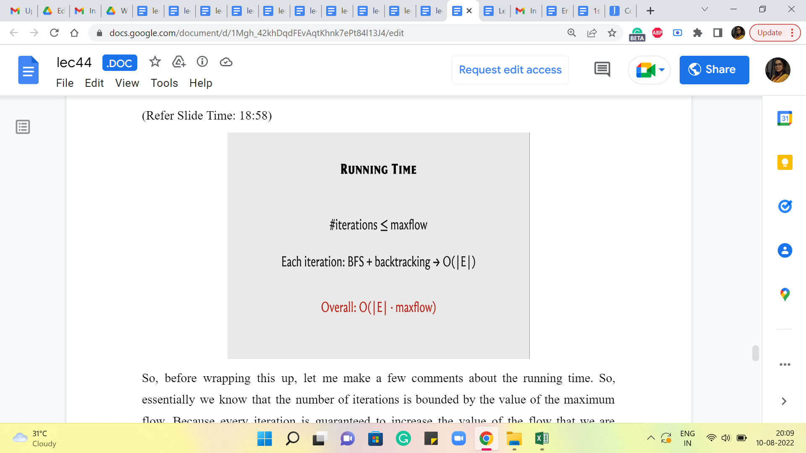
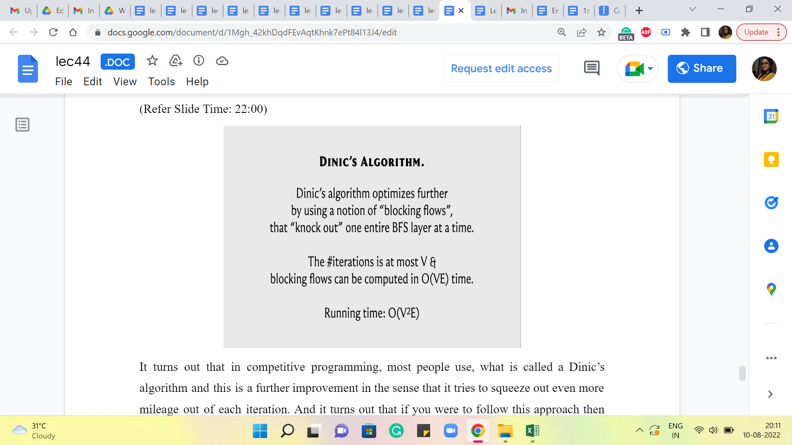

M 1 (Ford-Fulkerson for Max Flow)
Lecture - 44
Network Flows - Module 1 (Ford-Fulkerson for Max Flow)
(Refer Slide Time: 0:11)
Alright. So, welcome back to the second segment of the first module in week 8, where we are talking about network flows. So, just to recap in the previous segment, we talked about what a flow network is. We also defined the notion of a flow. We talked about what it means for a flow to be feasible. We also described the value of a flow and we set ourselves the target of finding a maximum flow. So, that is what is happened so far.
(Refer Slide Time: 0:20)
 
 
 
We even proposed a natural-sounding algorithm or a natural approach to finding some sort of a flow, and the question of whether this approach actually produced a maximum flow was left as food for thought. So, I hope you did have a chance to play around with examples, and you have probably concluded, if you did that, that this algorithm may not actually work in all situations.
(Refer Slide Time: 1:06 and 1:54)


So, here is a simple example of where the algorithm might fail. So, recall that what we were doing is, starting off, by finding an S-T path and basically pushing as much flow as we could along that path adjusting the capacities and repeating this for as long as we could. So, here is a graph and the capacities are as indicated in particular every edge, has unit capacity.
And to begin with, for example, your algorithm could potentially find this particular S-T path. And if you choose to push as much flow as you can through this path, which is essentially one unit of flow, notice that, in this example, every edge is a bottleneck edge. So there is not really much to speculate here.
So, if we were to actually push flow along this path, then the capacities of all of these edges would be turned down to 0, which means that we effectively do not have these edges with us anymore because they are fully used up.
(Refer Slide Time: 2:06)
 
So, we simply delete these edges from the graph as we said we would. And now you are left with a situation where S and T are completely disconnected and your algorithm comes to a grinding halt. And you, basically, found a valid flow whose value is one. On the other hand, if you go back to the input flow network, by just the algorithm of staring at the picture, you can probably see that there is, in fact, a flow whose value is 2, which is better than the one that is found by your algorithm.
So, in particular, you could send flow across the top and the bottom paths, from the factory to the shop, and you would be better off if you simply did not use the edge in the middle from X to Y. So, this shows that the algorithm that we developed is not flawless in terms of finding the maximum flow. But now, let us think about if there is some way that we can build on the ideas that we already had and somehow fix the issue that we were having.
(Refer Slide Time: 3:10)


So, basically what we want to do is see if we can correct our mistakes as we go along. So it is possible that we found a path that was not quite the right one because remember what was happening here is that by essentially using up the path that went via the edge X-Y, we kind of blocked ourselves off from being able to leverage some of the other paths that would have put us in a better place. So, if that decision could somehow be rolled back, then that would allow us hopefully the opportunity of discovering the more meaningful paths that are available to us.
(Refer Slide Time: 3:51)
So, just to summarize, what we have said so far, essentially if we make a mistake with respect to the S-T path that we choose in a particular round, we want to build up some sort of mechanism that allows us to actually undo the flow that we sent through this particular S-T path. So, you might want to take a moment here to think about how would you build-in this kind of undoing mechanism into your network. As such what we have been doing so far, is clearly not enough.
Because once we decide to pass some flow through an edge, in particular, especially, when it has an edge that is saturated to full capacity, what ends up happening is that, that edge simply disappears from that graph, which seems that we have really pushed ourselves into a corner with respect to this choice. There does not seem to be any mechanism for actually saying: No, let us go back and let us not send that flow through that edge. Let us re-route it some other way.
So, since that edge is completely gone, we need to really revisit what we are doing and see if we can set up some additional support systems that can guide the flow back if required later on. So, this is I think the place where you really need a little bit of imagination. So, do not worry if this is not something that you are able to see or come up with immediately. In fact, I am not even sure how to present any more intuition.
So, what I am going to switch to doing now, is describing what our algorithm is actually going to do. And I hope that it makes sense once it is actually presented to you. But if you want to play with this sort of general idea for a while, please feel free to pause here, and think things over a bit before I do reveal the algorithm that we will be working with. Alright. So, what we are going to do, is the following.
We will basically introduce carefully, some extra edges for ourselves, which will basically open up some additional routing options, which will correspond to an indication that some flow decisions should be rolled back.
(Refer Slide Time: 6:00)

So, to be able to keep track of these extra edges that we want to be working with, we are going to introduce this notion of a residual graph, which you can basically think of as some sort of an auxiliary graph, which is very intimately connected with the flow network. But it has all of these extra mechanisms to help us with the rollbacks. So, a residual graph is based on both a flow network and a given flow, which right at the beginning, you can just imagine as being the trivial flow, which assigns 0 to every edge.
(Refer Slide Time: 6:24)

But once you are given a flow network and a feasible flow ‘f’ then here is what the residual graph looks like. So, to begin with, the vertex set of the residual graph is exactly the same as the vertex set of the flow network. And then if we have an edge, let us say from A to B in the flow network which has a capacity of C and a flow of ‘f’ with respect to this given flow, then in the residual graph, we are going to introduce an edge from A to B with capacity C-f.
Now, this may sound familiar because this is what, we were doing so far already. So, if you have a flow of ‘f’ going through an edge that has capacity C, then you want to record that by saying that you are now working with an edge of reduced capacity and the capacity is reduced by the amount of flow that you have assigned to that edge. So, so far, the residual network looks very natural.
(Refer Slide Time: 7:27)

But the thing that actually allows us to fix our mistakes, is this other edge that we are going to introduce, which is commonly called a back edge. So we are going to introduce an edge also from B to A which has a capacity of F. So, this is, basically, telling us that okay look if you want you can pass a flow through this back edge.
And whenever you do that I will basically know that I should go back to the original graph and reduce the flow that was being originally passed through the edge A to B by whatever amount of flow you are passing through this back edge. So, this mechanism will actually hopefully become clearer with an example. So, let us go back and try it out on the example on which our first algorithm failed and let us see if this construction can actually save that example and actually find the optimal flow.
(Refer Slide Time: 8:13)

So, remember here is what we had. We made this bad choice of sending our first flow from S to T via the edge X-Y. So, these were all unit capacity edges that were being used up completely. And other than this we had these two edges as well, so we had edges from S to Y and from X to T.
It is drawn up a little bit differently here but if you like, you could just pause and go back to the example from before just to confirm that the structure of the edges is exactly the same. So, this is basically the flow that we have at the end of the first iteration. When we do our first S to T path. Now, let us go ahead and take a look at what the residual graph would look like.
(Refer Slide Time: 9:03)

First of all, for all the edges through which we are passing a flow, we are going to have the same edges but with a reduced capacity and this capacity is going to be 0. Notice that the capacity of the edges other than the three that were involved in the path remains the same. It is unaffected because there was no flow going through these edges in the first place. So, these are all the forward edges. These are the edges corresponding to the real edges in the graph.
Now let us introduce the artificial back edges. So, notice that for each of the forward edges involved in the path S to X, X to Y, Y to T, we are going to get these back edges and the capacity of these back edges is actually going to be equal to the amount of flow that we were passing through them. Now the other two edges that we have here will also have back edges corresponding to them.
But because they had zero flow passing through them, these back edges will also have 0 capacity. So, I am not drawing them for clarity. In fact, we also have some of these forward edges that have 0 capacity, which are edges that are as good as not being there.
(Refer Slide Time: 10:08)
 
So, let me remove those from the picture as well. So, this is the residual network. Just pause the video here and see if you can find an S to T path. And notice that if you can, then this is in contrast to what happened with our original algorithm, where we just got completely stuck after finding that first path. Okay. So, take a pause here and see if you can find an S to T path.
Alright. So, notice that in this graph, you can in fact find an S to T path, and here is one that looks like this. And the dotted edge is just to remind us that that is actually an edge that is not present in the original graph. So, what does that really signify? What are we going to do if you were the manager at the factory? Then what instructions are you going to give, you know, the buses, the people who are going to be driving the buses across to the shop?
Well, you are going to tell them that look we did plan to send one bus across from X to Y. But let us not do that anymore and the reason you are able to say that is because you see that in the residual network, you are passing a flow through the back edge, which means you have to roll back the flow through the corresponding real edge in the base flow network.
So, you are basically going to say, okay, let us actually take back that decision and let us instead route flow through the edges from S to Y and from X to T. So, you can check that this actually corresponds to the flow that we were hoping to find the one, where we said if we used the top path and the bottom one, ignoring the edge in the middle. Then we would actually have a flow of two units. This is really that flow.
In particular, notice that the back edges X to S and T to Y are not being used in this S to T path. So, we are not going to do any rollbacks there. So, originally we had from the previous iteration, one unit of flow (going from the edge) going on the edge from S to X and on the edge from Y to T and that flow is going to remain as it is. But what we have essentially done is, we have peeled off the flow from the edge X to Y and we have essentially rerouted it through these two edges from X to T and from S to Y.
So, if you write it out with respect to the older drawing you will see that this is exactly the flow that we were hoping to find. And this is the best that we can actually hope for. So, it is good to see that our intervention with the residual graph actually fixed up the situation for this small example. It actually turns out that this idea works in general, but actually proving this is going to be beyond the scope of this discussion.
As usual, if you are interested in the proof of correctness then you are certainly welcome to look up the resources that have been linked up (to) in the description of this video as well as on the course website. In the meantime, let me just recap and summarize the algorithm for you, so that we know at least the mechanics of what is going on here.
(Refer Slide Time: 13:11)

So, what we have just been discussing so far, commonly goes by the Ford Fulkerson algorithm, and here is what it does. To begin with, you build the residual graph with respect to the trivial flow, which just assigns a value of 0 to every edge and you initialize an answer variable if you like or a max flow variable to 0 because right now the value of the trivial flow is just 0.
Then basically you work with the residual graph as long as you can find a path from S to T in the residual graph. Here is what you do. You want to push a flow of ‘f’ units through P, where ‘f’ is the bottleneck capacity of the path P. Remember we said that if you want to push a flow along a path, you need to look at every edge in the path and identify the edge that has the smallest capacity. This is called the bottleneck capacity. And that is the amount of flow that we are going to send through this path. And we are going to increment max flow by ‘f’ because this is the additional amount of value that we gained in our resulting flow.
Now let me just talk for a moment about this phrase, sending a flow, which is a bit loaded. So how do we send a flow of F units through this path? Well, we look at every edge of this path in turn. If it is an original edge that belongs to the flow network as well then what we do is simple, we take the old flow that we had through this edge and we simply increment it by ‘f.’
On the other hand, if it is a back edge in the residual graph that means that what we need to do is, a rollback action, which essentially means the following. We look at the corresponding forward edge in the original graph and what we do is, we look at the old flow and we decrement it by ‘f.’ We reduce it by ‘f.’ So, that is how our flow function is going to evolve based on the S-T path that we have found in the residual graph. So, that is it that is pretty much the entire algorithm.
(Refer Slide Time: 15:07, 15:48 and 16:15)


Let me just give you a quick visual to hopefully reaffirm our intuition for how these capacities work. So, what you see with the green bar, is the original capacity of an edge that came with the input flow network. The blue bar tells you the amount of flow that we are sending through it currently with whatever flow we are working with, in the current iteration.
And this will imply that in the residual graph, we have a back edge, which has the same capacity as the current flow. That is what allows us to roll back as much of the current flow as we want by simply sending a flow of that amount through this back edge in the residual graph. Right.
So, in particular, if we decide to increase the flow through the original graph (then through the edge of the original graph) then the capacity of the reverse edge will also accordingly increase to account for the possibility of rolling back all of this extra flow as well. On the other hand, if you decide to pass some flow through this reverse edge, in the residual graph that means that essentially you want to decrease the flow that you are passing through the original edge.
And as you do that the capacity of the reverse edge will also correspondingly come down to basically remain in sync with the actual amount of flow that is passing through the edge. So, that is what is going on as you progress through this algorithm. Now when you actually implement this algorithm, you could choose to keep track of the capacities in this way if you like.
(Refer Slide Time: 16:38)

But another way of doing it is, to simply fix the capacities upfront. So, every edge corresponding to an original edge in the network will have its given capacity. Whereas, each one of these artificially introduced back edges will always have a capacity of 0 throughout the run of the algorithm. And the way we keep track of what is going on is through the flow function.
So, notice that what we are actually interested in is the residual capacity, which is the difference between the capacity and the flow so that we can correctly calculate what is the bottleneck capacity on any S-T path. So, essentially for all the original edges, the capacities are anyway fixed and we just need to make sure that we are correctly keeping track of how much flow we are passing through these edges.
For any of the back edges, notice that the capacities are evolving based on what is the flow that is going through the corresponding forward edge. So, instead of letting the capacities change, what we are going to do is, essentially pretend that we are sending a negative flow through this edge.
So, for example, let us say that in the first iteration, we decide to send 10 units of flow through a real edge in the flow network, then the way we are going to record that is by saying: Okay, that is +10 units of flow through the real edge and it is -10 units of flow through the corresponding back edge.
When you do that and when it comes to looking at the residual capacity, the capacity of this back edge is going to be 0. And then you are going to subtract -10 from it. So what you will be left with is 10 as the residual capacity. So, it is just enough to track the flows. You do not have to worry about also tracking the capacities. And this just makes your code a little bit cleaner, a little more convenient to work with.
So, remember that whenever you are passing a flow of ‘f’ through any edge, record that as an increment of ‘f’ through that edge and an increment of ‘-f,’ or a decrement of ‘f’ through the corresponding edge in the opposite direction. And you will see that this essentially works out exactly as you would like it to, in all possible cases. So, we will take a much more detailed look at the implementation in the last segment for this module. So, if this was not completely clear, hopefully, it will be more explicit and visible, when we get to that part of the discussion.
(Refer Slide Time: 18:58)

So, before wrapping this up, let me make a few comments about the running time. So, essentially we know that the number of iterations is bounded by the value of the maximum flow. Because every iteration is guaranteed to increase the value of the flow that we are working with by at least one.
Now, what is it that is happening in each of these iterations? Well, we do run a BFS. We do some backtracking to actually find the S-T path. And we make sure that we evaluate the bottleneck capacity on this path and adjust all the capacities or the flow values along this path appropriately. So, all of this is essentially linear time work – linear in the number of edges of the graph. So, the overall running time essentially is ‘m’ times the value of the max flow.
Now, this sounds reasonable, but it can be really terrible if the numbers are large and your max flow value can be really huge. You can come up with adversarial examples where this algorithm takes a really really long time. It painstakingly increments the flow value by literally one in every iteration. I mean ideally, you want your flow to increase by large jumps so that it is not too many iterations.
So, notice that this max flow value is totally independent of the number of vertices in the number of edges. It could be a function of the weights or the capacities that you have on the edges, which means that this is a really dangerous sort of upper bound to be working with, especially if the upper bound is tight and it can actually be realized on certain instances.
So, it turns out that you can just continue using this framework for finding a max flow. But basically be a little more choosy about which S-T paths you work with, in each iteration, and that already can dramatically improve your running time.
(Refer Slide Time: 20:42)

So, the first specific improvement to this is by ensuring that you pick the shortest S-T paths, using BFS. I guess we may have been implicitly doing this all along. But by choosing to pick the shortest S-T path in each iteration, it turns out that you actually guarantee that the number of iterations will not exceed V times E, which is the product of the number of vertices in the number of edges, which brings down the running time in some sense to n times m squared, where m is the number of edges and n is the number of vertices.
Now, of course, this requires an explicit argument for why the number of iterations is bounded in this way. Once again the specifics of this argument are beyond the scope of this discussion, but there are some very nice explanations provided in other write-ups and videos, so you will find some pointers to those in the description of this video as well as once again on the course website.
So, please feel free to look these up. These are really nice arguments that establish these bounds. But for now, we are just going to take this as a given and this is the implementation that we will actually discuss in the last segment of this module.
(Refer Slide Time: 22:00)

It turns out that in competitive programming, most people use what is called a Dinic’s algorithm, and this is a further improvement in the sense that it tries to squeeze (out) even more mileage out of each iteration. And it turns out that if you were to follow this approach, then the total number of iterations is actually bounded by n, as opposed to n times m. And the amount of work that you have to do to make each iteration actually succeed is n times m. So, the overall running time is now, n squared m, as opposed to n m squared from before. And this can again be a significant improvement.
So, again Dinic’s algorithm, as I said, tries to leverage more using this notion of blocking flows. So, you want to basically again just get more work done in every iteration somehow. I do not want to go into the details of this here because this is something that we will not be getting into.
It is a little bit beyond the scope of what I think our discussion here is about, but just for completeness, there is an implementation of the next algorithm that is given in the course repository. So, just in case that is something that you need to invoke as a black box, it is available for you. You can take a look at it and if you are curious, you can even familiarize yourself with what is actually going on. Now it turns out that there could be a few problems for which the Edmonds-Karp implementation will actually fail.
(Refer Slide Time: 23:29)

But this one will go through. So on SPOJ, for instance, there is a problem called max flow, and if you try to run the Edmonds-Karp version that we have, it is going to time out. But Dinic’s variant will go through. So, basically, you could be in that situation, and as I said, many people will simply default to using the next algorithm, because that is just, you know, that is just the thing to do if you want to be on the safe side.
So, you are welcome to do that, as long as you know what you are doing, and you know how things plugin. Actually, the overall implementation is very similar. Because the way this works is that we are working with a class called max flow. So, the interface remains exactly the same. It is really the internals that has been swapped out. So, you should have no difficulty using this in implementation.
But the only thing I want to emphasize is that we are not really discussing how exactly this algorithm actually manages this improvement. And once again, if you are curious, there are some nice explanations that have been linked to in the description of this video. So please do go ahead and check that out if you would like to.
Alright. So, with that, I believe we have enough information to get to the implementation. And that is going to happen in the last segment. As always, I welcome you to try it out on your own a little bit before actually following along. And I think that would be a good experience, even if you do not get all of it completely. It will be fun, I think, to give this a shot yourself. But one way or the other, I will look forward to meeting you again in the last segment of this first module. So, see you there!